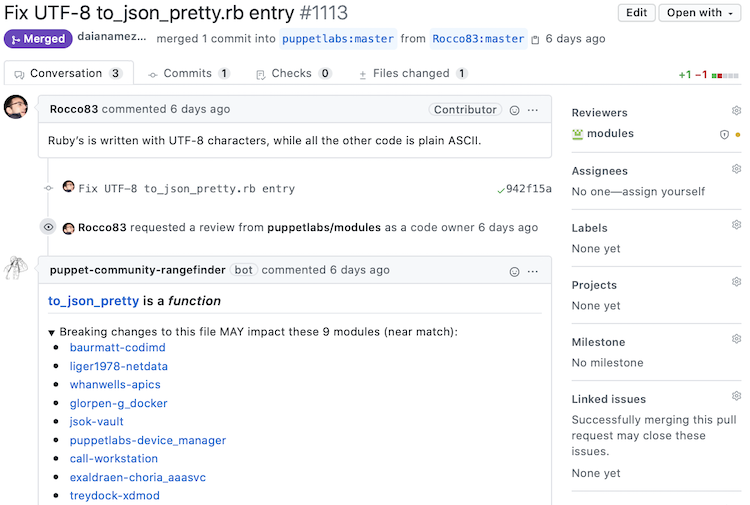
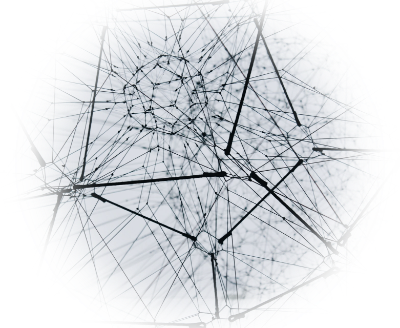
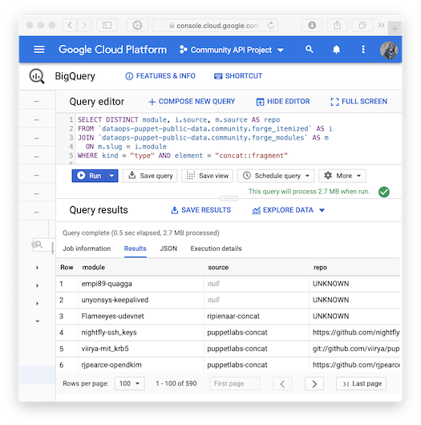
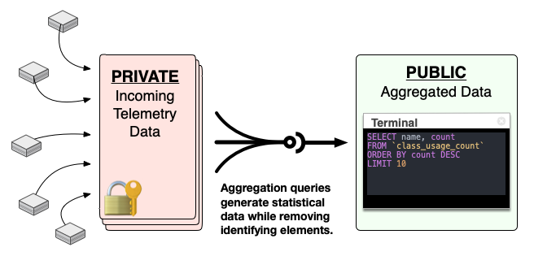
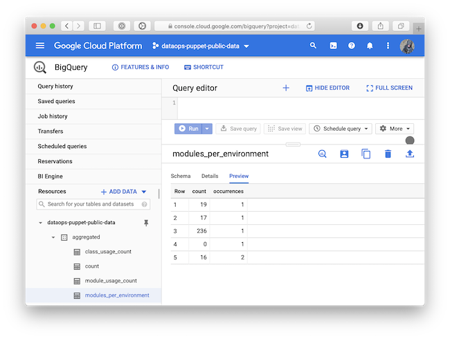
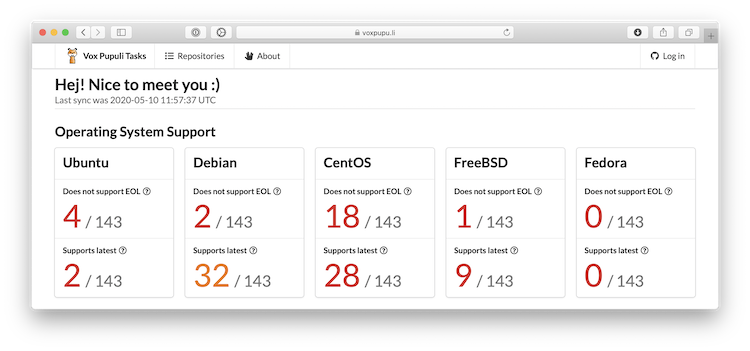

Showoff Menu
Close
Press ? for help.
All features are anonymous.
Press ? for help.
All features are anonymous.
Photo by https://unsplash.com/@benknight17
Photo by https://unsplash.com/@benknight17
It's not a huge task to design and build a simple, single-purpose, bespoke Puppet module in a short period of time.
pdk new modulepdk new classpdk validatepdk test unit
Every single platform or feature you support takes time to maintain it!
Two roads diverged in a wood, and I—
I took the one less traveled by,
And that has made all the difference.
-- Robert Frost
Photo by https://unsplash.com/@leliejens
Photo by https://unsplash.com/@leliejens
[~/Projects/puppetlabs-concat]$ rangefinder manifests/fragment.pp
[concat::fragment] is a _type_
==================================
The enclosing module is declared in 173 of 575 indexed public Puppetfiles
Breaking changes to this file WILL impact these modules:
* nightfly-ssh_keys (https://github.com/nightfly19/puppet-ssh_keys.git)
* viirya-mit_krb5 (git://github.com/viirya/puppet-mit_krb5.git)
* rjpearce-opendkim (https://github.com/rjpearce/puppet-opendkim)
* shadow-tor (git://github.com/LeShadow/puppet-tor.git)
[...]
Breaking changes to this file MAY impact these modules:
* empi89-quagga (UNKNOWN)
* unyonsys-keepalived (UNKNOWN)
* Flameeyes-udevnet (UNKNOWN)
* ricbra-ratbox (git://github.com/ricbra/puppet-ratbox.git)
[...]Identify the public Forge modules using parts of your code.

Rangefinder also comes in a GitHub App flavor.

itemize library: https://github.com/binford2k/binford2k-itemize
Photo by https://unsplash.com/@alinnnaaaa
itemize library: https://github.com/binford2k/binford2k-itemize
Photo by https://unsplash.com/@alinnnaaaa

The data Rangefinder uses is stored in a public BigQuery database.
Find more information about how it works and other cool queries you can run on the dataset powering it at my blog: https://binford2k.com/2020/04/06/rangefinder/
You'll find a lot more information about the tool and the dataset powering it at my blog, binford2k.com.
Photo by https://unsplash.com/@sguestsmith
Photo by https://unsplash.com/@sguestsmith
Sharing too much implementation information about how an infrastructure works is just asking for security compromises.
Photo by https://unsplash.com/@quinoal
If you saw that a site was in the CEST time zone, had
the locale set to fr-ch, and had thousands of nodes classified with various
HPC modules, then you might guess that you were looking at CERN.
For example, if you saw that a site was:
CEST time zone (central european summer time)fr-ch (swiss-french)then you might surmise that you were looking at CERN and use the rest of that record as reconnaissance against them!
Photo by https://unsplash.com/@crissyjarvis
Photo by https://unsplash.com/@crissyjarvis
-- The top ten most used classes in the ecosystem
SELECT name, count
FROM `dataops-puppet-public-data.aggregated.class_usage_count`
ORDER BY count DESC
LIMIT 10[
{ "name": "Resource_api::Agent", "count": "272" },
{ "name": "Account", "count": "272" },
{ "name": "Ssl::Params", "count": "272" },
{ "name": "Classification", "count": "272" },
{ "name": "Os_patching", "count": "269" },
{ "name": "Ntp", "count": "265" },
{ "name": "Ntp::Install", "count": "265" },
{ "name": "Ntp::Config", "count": "265" },
{ "name": "Ntp::Service", "count": "265" },
{ "name": "Zsh::Params", "count": "265" }
]You'll need a Google Cloud account and then you can access the dataset with your browser via the BigQuery Console. Then you can run any queries you'd like.
Data is generated via SQL queries:
-- Generate an aggregate table of all classes used and their counts.
SELECT classes.name, classes.count
FROM `bto-dataops-datalake-prod.dujour.community_metrics`,
UNNEST(classes) as classes
GROUP BY classes.name, classes.count
Our own developers who want to use collected metrics data have to do it via aggregation queries just like you would.
Photo by https://unsplash.com/@danielkcheung
Photo by https://unsplash.com/@danielkcheung
descriptionschemaexampleruninitializesetupcleanupdef self.schema
[
{
"description": "The number of environments",
"mode": "NULLABLE",
"name": "environment_count",
"type": "INTEGER"
}
]
endSee full schema of all plugins with dropsonde dev schema
def self.run
[
:environment_count => Puppet.lookup(:environments).list.count,
]
endschema or plugin fails.def self.example
[
:environment_count => rand(1..100),
]
enddataops-puppet-public-data:community.community_metrics
dataops-puppet-public-data:community.community_metrics
$ dropsonde --enable environments preview
Puppet Telemetry Report Preview
===============================
Dropsonde::Metrics::Environments
-------------------------------
This group of metrics gathers information about environments.
- environment_count: The number of environments
4
Site ID:
bab5a61cb7af7d37fa65cb1ad97b2495b4bdbc85bac7b4f9ca6932c8cd9038dd7e87be13abb367e124bfdda2de14949f8b3e8658931e39f58bcef23382d8f426seed value
Once you have an account, browse to https://console.cloud.google.com/bigquery?p=dataops-puppet-public-data&d=aggregated
to check out the dataops-puppet-public-data project.
Example: a list of the modules on the Forge that define custom native types:
SELECT DISTINCT g.repo_name, f.slug
FROM `dataops-puppet-public-data.community.github_ruby_files` g
JOIN `dataops-puppet-public-data.community.forge_modules` f
ON g.repo_name = REGEXP_EXTRACT(f.source, r'^(?:https?:\/\/github.com\/)?(.*?)(?:.git)?$')
WHERE STARTS_WITH(g.path, 'lib/puppet/type')
LIMIT 1000
Photo by https://unsplash.com/@lunarts
Photo by https://unsplash.com/@lunarts
puppet module install puppetlabs/dropsondePuppetfile for better r10k deploys.voxpupuli/puppet-webhook.puppet module install puppetlabs/dropsondeSeriously, install the module and classify your master. It would help a ton.
Dropsonde: an expendable weather reconnaissance device created by the
National Center for Atmospheric Research, designed to be dropped from an aircraft
at altitude over water to measure storm conditions as the device falls to the surface.
Installing Dropsonde is super straightforward. Install the puppetlabs-dropsonde
Puppet module and classify your Puppet master with the dropsonde class. If you
have multiple compile nodes, just classify the primary Puppet server. This will
install the tool and configure a weekly cron job to submit the reports.
Dropsonde: an expendable weather reconnaissance device created by the
National Center for Atmospheric Research, designed to be dropped from an aircraft
at altitude over water to measure storm conditions as the device falls to the surface.